pacman::p_load(scales, tidyverse, tsibble, feasts, fable, seasonal, urca)In-class_Ex07
ts_data <- read_csv("data/visitor_arrivals_by_air.csv")Rows: 144 Columns: 34
── Column specification ────────────────────────────────────────────────────────
Delimiter: ","
chr (1): Month-Year
dbl (33): Republic of South Africa, Canada, USA, Bangladesh, Brunei, China, ...
ℹ Use `spec()` to retrieve the full column specification for this data.
ℹ Specify the column types or set `show_col_types = FALSE` to quiet this message.ts_data$`Month-Year` <- dmy(
ts_data$`Month-Year`)ts_data# A tibble: 144 × 34
`Month-Year` `Republic of South Africa` Canada USA Bangladesh Brunei China
<date> <dbl> <dbl> <dbl> <dbl> <dbl> <dbl>
1 2008-01-01 3680 6972 31155 6786 3729 79599
2 2008-02-01 1662 6056 27738 6314 3070 82074
3 2008-03-01 3394 6220 31349 7502 4805 72546
4 2008-04-01 3337 4764 26376 7333 3096 76112
5 2008-05-01 2089 4460 26788 7988 3586 64808
6 2008-06-01 2515 3888 29725 8301 5284 55238
7 2008-07-01 2919 5313 33183 9004 4070 80747
8 2008-08-01 2471 4519 27427 7913 4183 66625
9 2008-09-01 2492 3421 21588 7549 3160 52649
10 2008-10-01 3023 4756 25112 7527 2983 54423
# ℹ 134 more rows
# ℹ 27 more variables: `Hong Kong SAR (China)` <dbl>, India <dbl>,
# Indonesia <dbl>, Japan <dbl>, `South Korea` <dbl>, Kuwait <dbl>,
# Malaysia <dbl>, Myanmar <dbl>, Pakistan <dbl>, Philippines <dbl>,
# `Saudi Arabia` <dbl>, `Sri Lanka` <dbl>, Taiwan <dbl>, Thailand <dbl>,
# `United Arab Emirates` <dbl>, Vietnam <dbl>, `Belgium & Luxembourg` <dbl>,
# Finland <dbl>, France <dbl>, Germany <dbl>, Italy <dbl>, …ts_data_ts <- ts(ts_data)
head(ts_data_ts) Month-Year Republic of South Africa Canada USA Bangladesh Brunei China
[1,] 13879 3680 6972 31155 6786 3729 79599
[2,] 13910 1662 6056 27738 6314 3070 82074
[3,] 13939 3394 6220 31349 7502 4805 72546
[4,] 13970 3337 4764 26376 7333 3096 76112
[5,] 14000 2089 4460 26788 7988 3586 64808
[6,] 14031 2515 3888 29725 8301 5284 55238
Hong Kong SAR (China) India Indonesia Japan South Korea Kuwait Malaysia
[1,] 17103 41639 62683 37673 27937 284 31352
[2,] 21089 37170 47834 35297 22633 241 35030
[3,] 23230 44815 64688 42575 22876 206 37629
[4,] 17688 49527 58074 26839 20634 193 37521
[5,] 19340 67754 57089 30814 22785 140 38044
[6,] 19152 57380 70118 31001 22575 354 40419
Myanmar Pakistan Philippines Saudi Arabia Sri Lanka Taiwan Thailand
[1,] 5269 1395 18622 406 5289 13757 18370
[2,] 4643 1027 21609 591 4767 13921 16400
[3,] 6218 1635 28464 626 4988 11181 23387
[4,] 7324 1232 30131 644 7639 11665 24469
[5,] 5395 1306 30193 470 5125 11436 21935
[6,] 5542 1996 25800 772 4791 10689 19900
United Arab Emirates Vietnam Belgium & Luxembourg Finland France Germany
[1,] 2652 10315 1341 1179 6918 11982
[2,] 2230 13415 1449 1207 7876 13256
[3,] 3353 14320 1674 1071 8066 15185
[4,] 3245 15413 1426 768 8312 11604
[5,] 2856 14424 1243 690 7066 9853
[6,] 4292 21368 1255 624 5926 9347
Italy Netherlands Spain Switzerland United Kingdom Australia New Zealand
[1,] 2953 4938 1668 4450 41934 71260 7806
[2,] 2704 4885 1568 4381 44029 45595 4729
[3,] 2822 5015 2254 5015 49489 53191 6106
[4,] 3018 4902 1503 5434 35771 56514 7560
[5,] 2165 4397 1365 4427 24464 57808 9090
[6,] 2022 4166 1446 3359 22473 63350 9681ts_tsibble <- ts_data %>%
mutate(Month = yearmonth(`Month-Year`)) %>%
as_tsibble(index = `Month`)ts_tsibble# A tsibble: 144 x 35 [1M]
`Month-Year` `Republic of South Africa` Canada USA Bangladesh Brunei China
<date> <dbl> <dbl> <dbl> <dbl> <dbl> <dbl>
1 2008-01-01 3680 6972 31155 6786 3729 79599
2 2008-02-01 1662 6056 27738 6314 3070 82074
3 2008-03-01 3394 6220 31349 7502 4805 72546
4 2008-04-01 3337 4764 26376 7333 3096 76112
5 2008-05-01 2089 4460 26788 7988 3586 64808
6 2008-06-01 2515 3888 29725 8301 5284 55238
7 2008-07-01 2919 5313 33183 9004 4070 80747
8 2008-08-01 2471 4519 27427 7913 4183 66625
9 2008-09-01 2492 3421 21588 7549 3160 52649
10 2008-10-01 3023 4756 25112 7527 2983 54423
# ℹ 134 more rows
# ℹ 28 more variables: `Hong Kong SAR (China)` <dbl>, India <dbl>,
# Indonesia <dbl>, Japan <dbl>, `South Korea` <dbl>, Kuwait <dbl>,
# Malaysia <dbl>, Myanmar <dbl>, Pakistan <dbl>, Philippines <dbl>,
# `Saudi Arabia` <dbl>, `Sri Lanka` <dbl>, Taiwan <dbl>, Thailand <dbl>,
# `United Arab Emirates` <dbl>, Vietnam <dbl>, `Belgium & Luxembourg` <dbl>,
# Finland <dbl>, France <dbl>, Germany <dbl>, Italy <dbl>, …ts_longer <- ts_data %>%
pivot_longer(cols = c(2:34),
names_to = "Country",
values_to = "Arrivals")ts_longer %>%
filter(Country == "Vietnam") %>%
ggplot(aes(x = `Month-Year`,
y = Arrivals))+
geom_line(size = 0.5)Warning: Using `size` aesthetic for lines was deprecated in ggplot2 3.4.0.
ℹ Please use `linewidth` instead.
ggplot(data = ts_longer,
aes(x = `Month-Year`,
y = Arrivals,
color = Country))+
geom_line(size = 0.5) +
theme(legend.position = "bottom",
legend.box.spacing = unit(0.5, "cm"))
ggplot(data = ts_longer,
aes(x = `Month-Year`,
y = Arrivals))+
geom_line(size = 0.5) +
facet_wrap(~ Country,
ncol = 3,
scales = "free_y") +
theme_bw()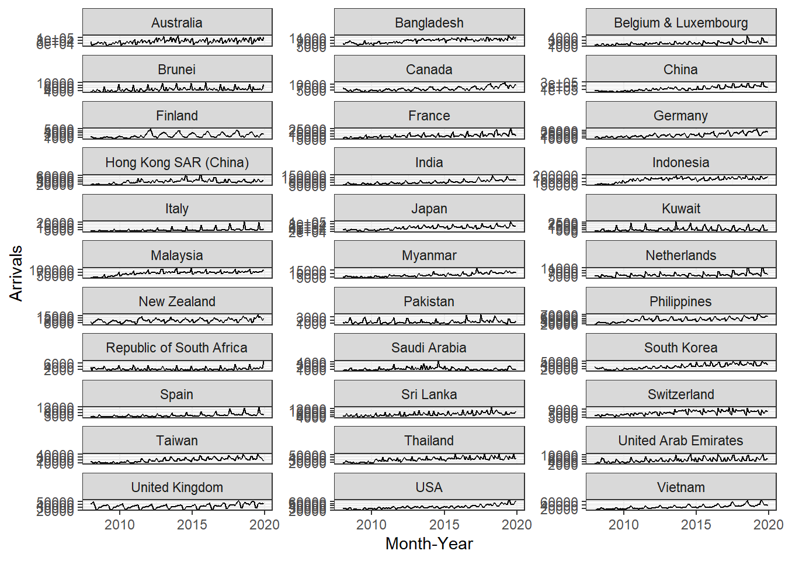
tsibble_longer <- ts_tsibble %>%
pivot_longer(cols = c(2:34),
names_to = "Country",
values_to = "Arrivals")tsibble_longer %>%
filter(Country == "Italy" |
Country == "Vietnam" |
Country == "United Kingdom" |
Country == "Germany") %>%
gg_season(Arrivals)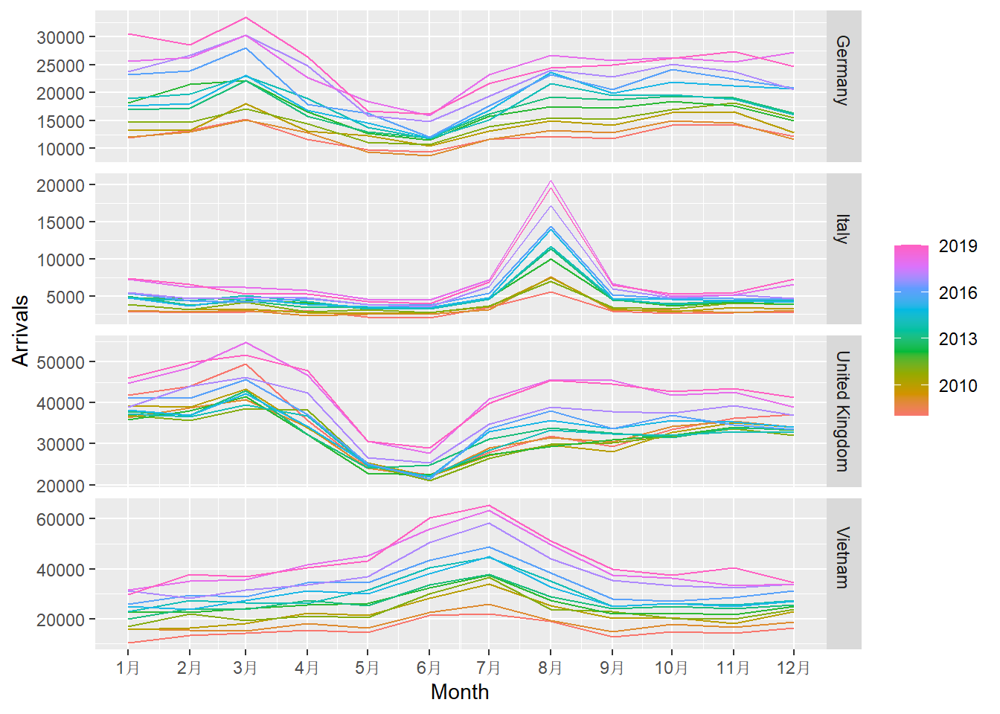
tsibble_longer %>%
filter(Country == "Vietnam" |
Country == "Italy") %>%
autoplot(Arrivals) +
facet_grid(Country ~ ., scales = "free_y")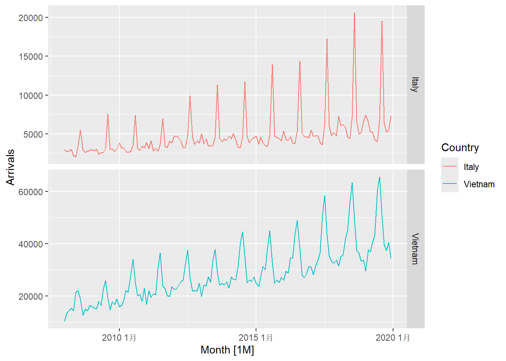
In the code chunk below, cycle plots using gg_subseries() of feasts package are created. Notice that the cycle plots show not only seasonal patterns but also trend.
tsibble_longer %>%
filter(Country == "Vietnam" |
Country == "Italy") %>%
gg_subseries(Arrivals)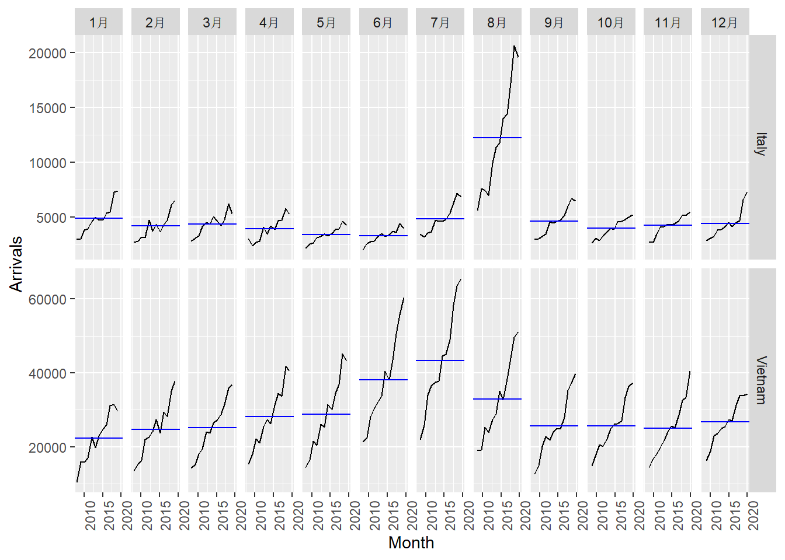
Single time series decomposition
tsibble_longer %>%
filter(`Country` == "Vietnam") %>%
ACF(Arrivals) %>%
autoplot()
tsibble_longer %>%
filter(`Country`== "Vietnam") %>%
PACF(Arrivals) %>%
autoplot()
Multiple time-series decomposition
tsibble_longer %>%
filter(`Country` == "Vietnam" |
`Country` == "Italy" |
`Country` == "United Kingdom" |
`Country` == "China") %>%
ACF(Arrivals) %>%
autoplot()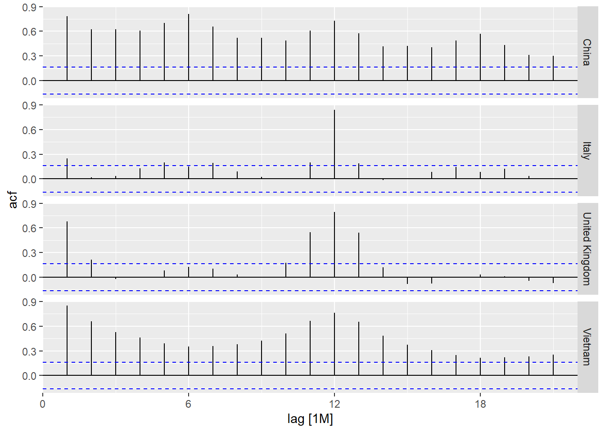
On the other hand, code chunk below is used to prepare a trellis plot of PACFs for visitor arrivals from Vietnam, Italy, United Kingdom and China.
tsibble_longer %>%
filter(`Country` == "Vietnam" |
`Country` == "Italy" |
`Country` == "United Kingdom" |
`Country` == "China") %>%
PACF(Arrivals) %>%
autoplot()
Composite plot of time series decomposition
tsibble_longer %>%
filter(`Country` == "Vietnam") %>%
gg_tsdisplay(Arrivals)
19.6.1 Visual STL diagnostics with feasts
tsibble_longer %>%
filter(`Country` == "Vietnam") %>%
model(stl = STL(Arrivals)) %>%
components() %>%
autoplot()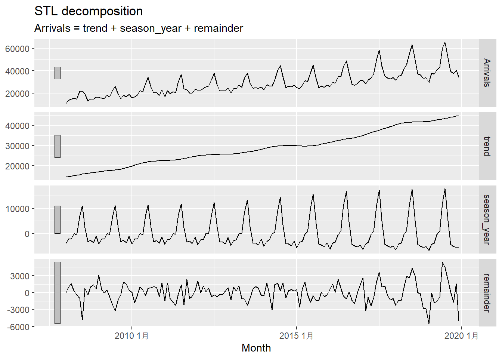
Classical Decomposition with feasts
tsibble_longer %>%
filter(`Country` == "Vietnam") %>%
model(
classical_decomposition(
Arrivals, type = "additive")) %>%
components() %>%
autoplot()Warning: Removed 6 rows containing missing values or values outside the scale range
(`geom_line()`).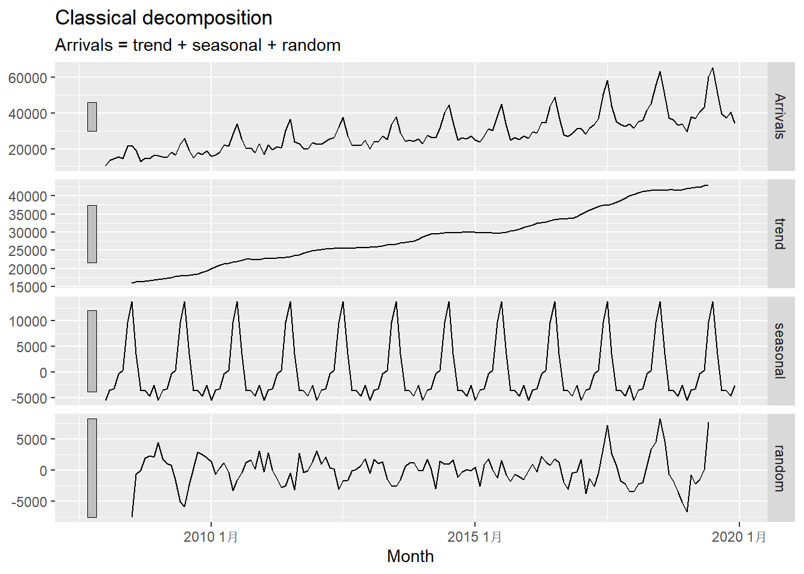
Visual Forecasting
19.7.1 Time Series Data Sampling
First, an extra column called Type indicating training or hold-out will be created by using mutate() of dplyr package. It will be extremely useful for subsequent data visualisation.
vietnam_ts <- tsibble_longer %>%
filter(Country == "Vietnam") %>%
mutate(Type = if_else(
`Month-Year` >= "2019-01-01",
"Hold-out", "Training"))Next, a training data set is extracted from the original data set by using filter() of dplyr package.
vietnam_train <- vietnam_ts %>%
filter(`Month-Year` < "2019-01-01")19.7.2 Exploratory Data Analysis (EDA): Time Series Data
Before fitting forecasting models, it is a good practice to analysis the time series data by using EDA methods.
vietnam_train %>%
model(stl = STL(Arrivals)) %>%
components() %>%
autoplot()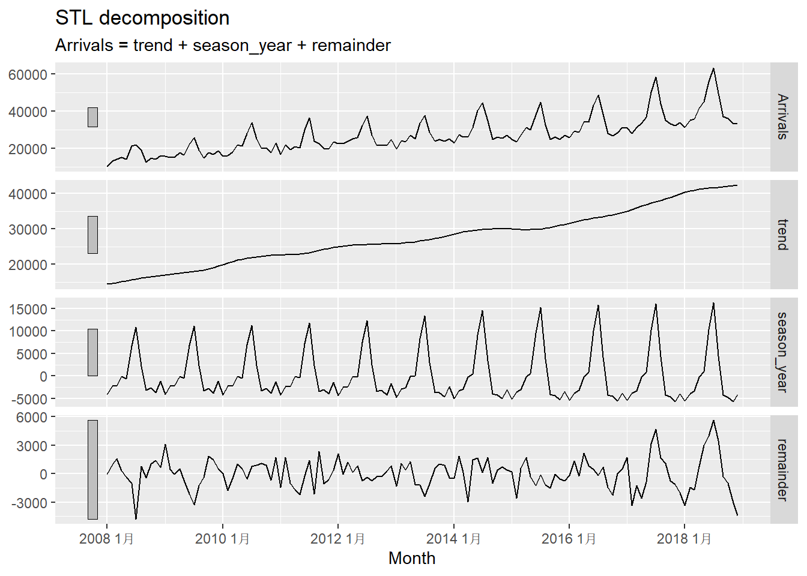
19.7.3 Fitting forecasting models
19.7.3.1 Fitting Exponential Smoothing State Space (ETS) Models: fable methods
In fable, Exponential Smoothing State Space Models are supported by ETS(). The combinations are specified through the formula:
fit_ses <- vietnam_train %>%
model(ETS(Arrivals ~ error("A")
+ trend("N")
+ season("N")))
fit_ses# A mable: 1 x 2
# Key: Country [1]
Country `ETS(Arrivals ~ error("A") + trend("N") + season("N"))`
<chr> <model>
1 Vietnam <ETS(A,N,N)>gg_tsresiduals(fit_ses)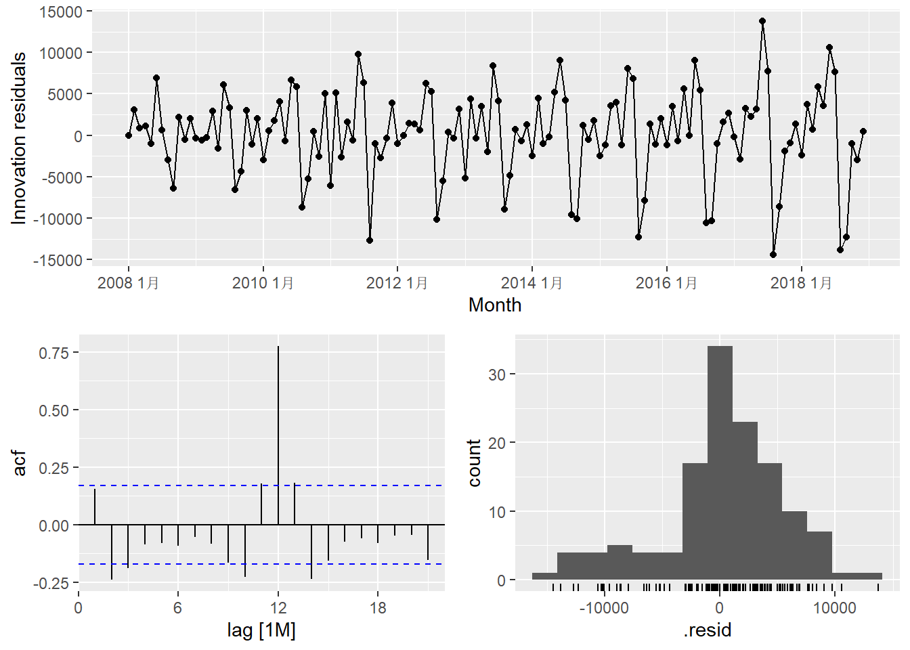
fit_ses %>%
report()Series: Arrivals
Model: ETS(A,N,N)
Smoothing parameters:
alpha = 0.9998995
Initial states:
l[0]
10312.99
sigma^2: 27939164
AIC AICc BIC
2911.726 2911.913 2920.374 19.7.3.5 Fitting ETS Methods with Trend: Holt’s Linear
19.7.3.6 Trend methods
vietnam_H <- vietnam_train %>%
model(`Holt's method` =
ETS(Arrivals ~ error("A") +
trend("A") +
season("N")))
vietnam_H %>% report()Series: Arrivals
Model: ETS(A,A,N)
Smoothing parameters:
alpha = 0.9998995
beta = 0.0001004625
Initial states:
l[0] b[0]
13673.29 525.8859
sigma^2: 28584805
AIC AICc BIC
2916.695 2917.171 2931.109 19.7.3.7 Damped Trend methods
vietnam_HAd <- vietnam_train %>%
model(`Holt's method` =
ETS(Arrivals ~ error("A") +
trend("Ad") +
season("N")))
vietnam_HAd %>% report()Series: Arrivals
Model: ETS(A,Ad,N)
Smoothing parameters:
alpha = 0.9998999
beta = 0.0001098602
phi = 0.9784562
Initial states:
l[0] b[0]
13257.28 523.54
sigma^2: 28641536
AIC AICc BIC
2917.921 2918.593 2935.218 19.7.3.8 Checking for results
Check the model assumptions with residuals plots.
gg_tsresiduals(vietnam_H)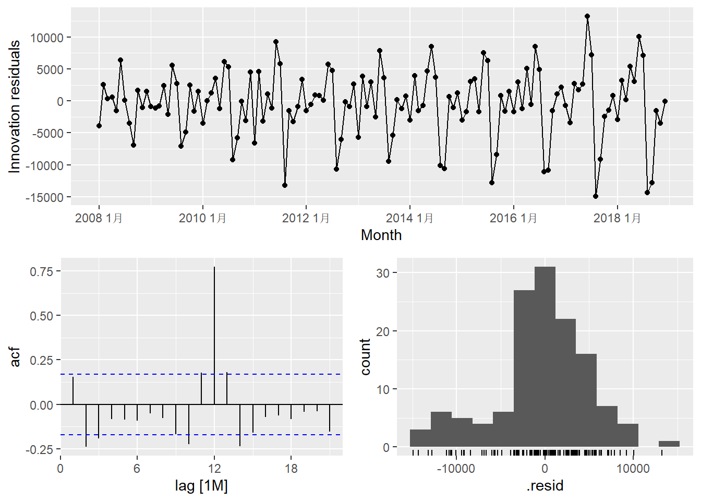
gg_tsresiduals(vietnam_HAd)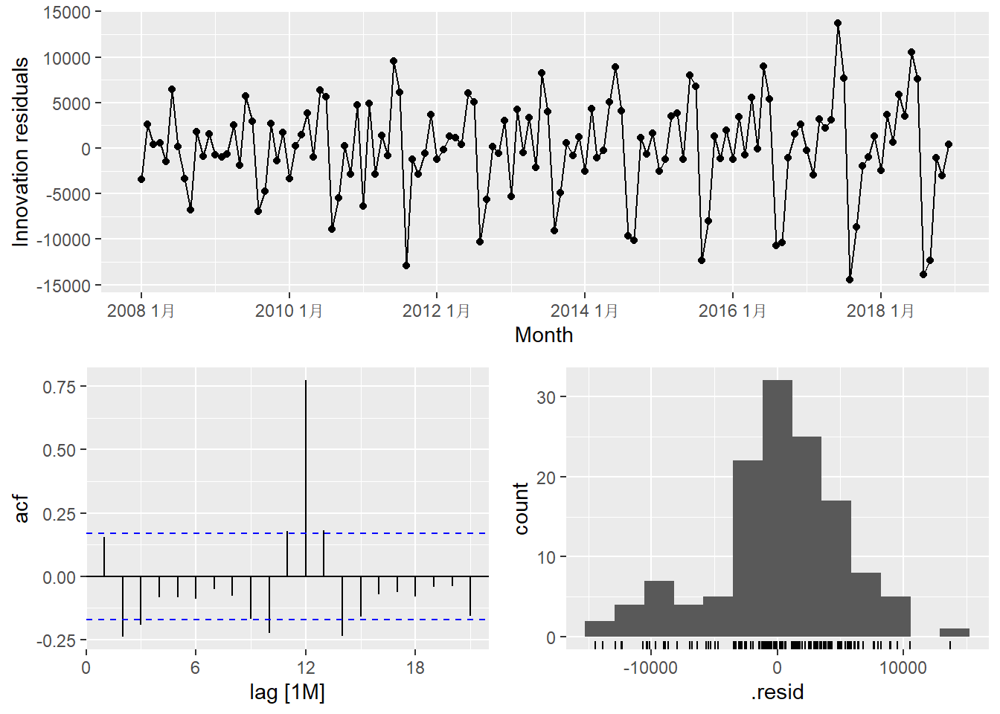
19.7.4 Fitting ETS Methods with Season: Holt-Winters
Vietnam_WH <- vietnam_train %>%
model(
Additive = ETS(Arrivals ~ error("A")
+ trend("A")
+ season("A")),
Multiplicative = ETS(Arrivals ~ error("M")
+ trend("A")
+ season("M"))
)
Vietnam_WH %>% report()Warning in report.mdl_df(.): Model reporting is only supported for individual
models, so a glance will be shown. To see the report for a specific model, use
`select()` and `filter()` to identify a single model.# A tibble: 2 × 10
Country .model sigma2 log_lik AIC AICc BIC MSE AMSE MAE
<chr> <chr> <dbl> <dbl> <dbl> <dbl> <dbl> <dbl> <dbl> <dbl>
1 Vietnam Additive 5.33e+6 -1336. 2706. 2711. 2755. 4.68e6 8.56e6 1.72e+3
2 Vietnam Multiplicative 4.55e-3 -1300. 2635. 2640. 2684. 3.05e6 3.42e6 5.20e-219.7.5 Fitting multiple ETS Models
fit_ETS <- vietnam_train %>%
model(`SES` = ETS(Arrivals ~ error("A") +
trend("N") +
season("N")),
`Holt`= ETS(Arrivals ~ error("A") +
trend("A") +
season("N")),
`damped Holt` =
ETS(Arrivals ~ error("A") +
trend("Ad") +
season("N")),
`WH_A` = ETS(
Arrivals ~ error("A") +
trend("A") +
season("A")),
`WH_M` = ETS(Arrivals ~ error("M")
+ trend("A")
+ season("M"))
)19.7.6 The model coefficient
tidy() of fabletools is be used to extract model coefficients from a mable.
fit_ETS %>%
tidy()# A tibble: 45 × 4
Country .model term estimate
<chr> <chr> <chr> <dbl>
1 Vietnam SES alpha 1.00
2 Vietnam SES l[0] 10313.
3 Vietnam Holt alpha 1.00
4 Vietnam Holt beta 0.000100
5 Vietnam Holt l[0] 13673.
6 Vietnam Holt b[0] 526.
7 Vietnam damped Holt alpha 1.00
8 Vietnam damped Holt beta 0.000110
9 Vietnam damped Holt phi 0.978
10 Vietnam damped Holt l[0] 13257.
# ℹ 35 more rows19.7.7 Step 4: Model Comparison
glance() of fabletool
fit_ETS %>%
report()Warning in report.mdl_df(.): Model reporting is only supported for individual
models, so a glance will be shown. To see the report for a specific model, use
`select()` and `filter()` to identify a single model.# A tibble: 5 × 10
Country .model sigma2 log_lik AIC AICc BIC MSE AMSE MAE
<chr> <chr> <dbl> <dbl> <dbl> <dbl> <dbl> <dbl> <dbl> <dbl>
1 Vietnam SES 2.79e+7 -1453. 2912. 2912. 2920. 27515844. 5.99e7 3.91e+3
2 Vietnam Holt 2.86e+7 -1453. 2917. 2917. 2931. 27718599. 6.03e7 3.92e+3
3 Vietnam damped Holt 2.86e+7 -1453. 2918. 2919. 2935. 27556629. 5.97e7 3.92e+3
4 Vietnam WH_A 5.33e+6 -1336. 2706. 2711. 2755. 4684271. 8.56e6 1.72e+3
5 Vietnam WH_M 4.55e-3 -1300. 2635. 2640. 2684. 3046059. 3.42e6 5.20e-219.7.8 Step 5: Forecasting future values
To forecast the future values, forecast() of fable will be used. Notice that the forecast period is 12 months.
fit_ETS %>%
forecast(h = "12 months") %>%
autoplot(vietnam_ts,
level = NULL)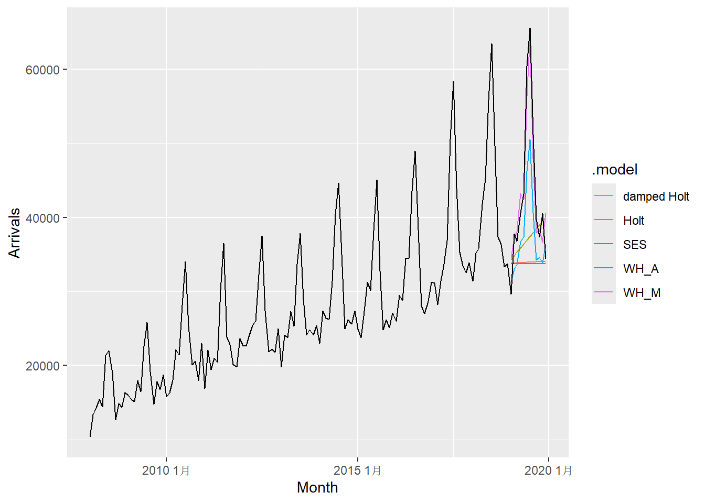
19.7.9 Fitting ETS Automatically
fit_autoETS <- vietnam_train %>%
model(ETS(Arrivals))
fit_autoETS %>% report()Series: Arrivals
Model: ETS(M,A,M)
Smoothing parameters:
alpha = 0.1613503
beta = 0.0001021811
gamma = 0.0001030996
Initial states:
l[0] b[0] s[0] s[-1] s[-2] s[-3] s[-4] s[-5]
15001.12 212.3552 0.9167302 0.8311728 0.8739287 0.8690543 1.104668 1.485584
s[-6] s[-7] s[-8] s[-9] s[-10] s[-11]
1.311207 0.9917759 1.014187 0.8973028 0.8816768 0.8227129
sigma^2: 0.0046
AIC AICc BIC
2634.751 2640.119 2683.759 19.7.10 Fitting Fitting ETS Automatically
Next, we will check the model assumptions with residuals plots by using gg_tsresiduals() of feasts package
gg_tsresiduals(fit_autoETS)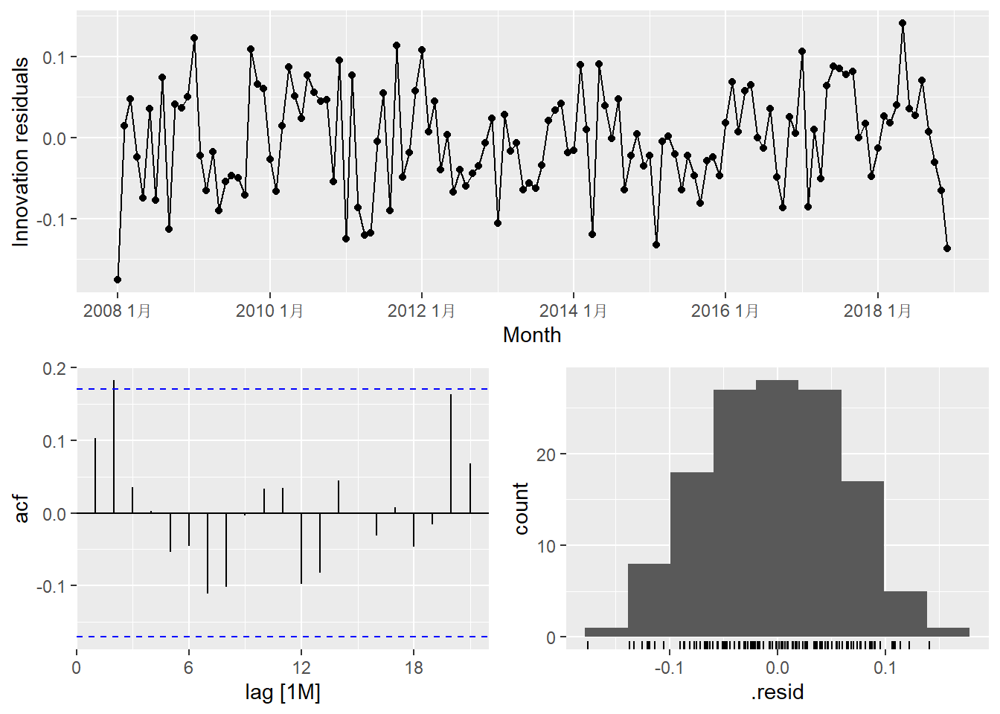
19.7.11 Forecast the future values
In the code chunk below, forecast() of fable package is used to forecast the future values. Then, autoplot() of feasts package is used to see the training data along with the forecast values.
fit_autoETS %>%
forecast(h = "12 months") %>%
autoplot(vietnam_train)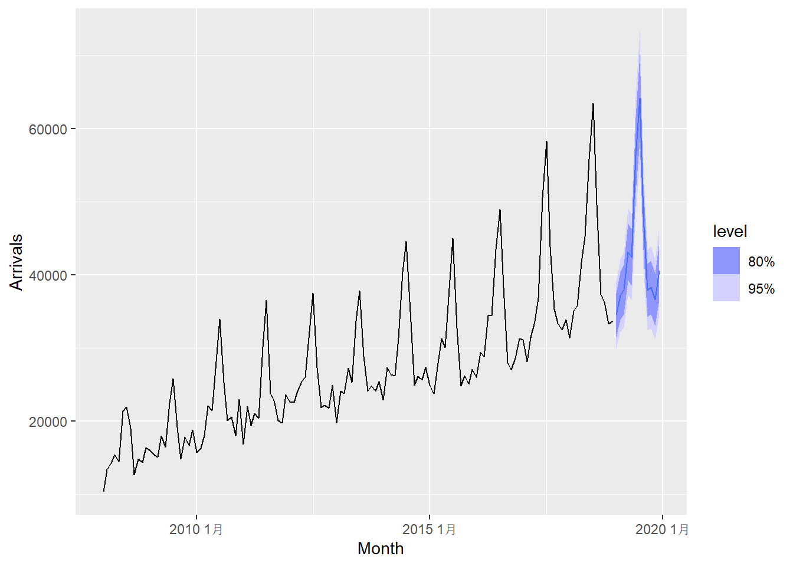
19.7.12 Visualising AutoETS model with ggplot2
There are time that we are interested to visualise relationship between training data and fit data and forecasted values versus the hold-out data.
19.7.13 Visualising AutoETS model with ggplot2
Code chunk below is used to create the data visualisation in previous slide
fc_autoETS <- fit_autoETS %>%
forecast(h = "12 months")
vietnam_ts %>%
ggplot(aes(x=`Month`,
y=Arrivals)) +
autolayer(fc_autoETS,
alpha = 0.6) +
geom_line(aes(
color = Type),
alpha = 0.8) +
geom_line(aes(
y = .mean,
colour = "Forecast"),
data = fc_autoETS) +
geom_line(aes(
y = .fitted,
colour = "Fitted"),
data = augment(fit_autoETS))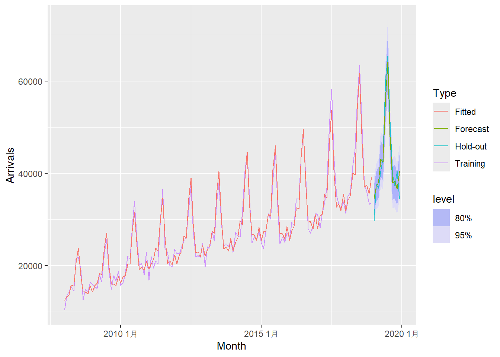
19.8 AutoRegressive Integrated Moving Average(ARIMA) Methods for Time Series Forecasting: fable (tidyverts) methods
19.8.1 Visualising Autocorrelations: feasts methods
feasts package provides a very handy function for visualising ACF and PACF of a time series called gg_tsdiaply().
vietnam_train %>%
gg_tsdisplay(plot_type='partial')Plot variable not specified, automatically selected `y = Arrivals`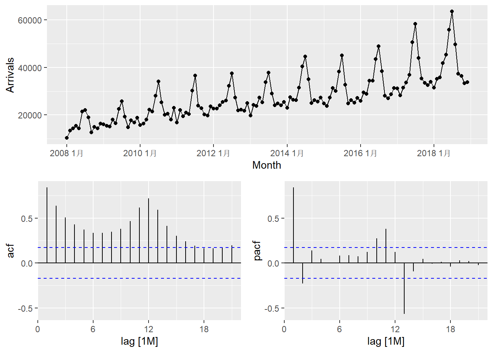
19.8.2 Visualising Autocorrelations: feasts methods
tsibble_longer %>%
filter(`Country` == "Vietnam") %>%
ACF(Arrivals) %>%
autoplot()
tsibble_longer %>%
filter(`Country` == "United Kingdom") %>%
ACF(Arrivals) %>%
autoplot()
19.8.3 Differencing: fable methods
19.8.3.1 Trend differencing
tsibble_longer %>%
filter(Country == "Vietnam") %>%
gg_tsdisplay(difference(
Arrivals,
lag = 1),
plot_type='partial')Warning: Removed 1 row containing missing values or values outside the scale range
(`geom_line()`).Warning: Removed 1 row containing missing values or values outside the scale range
(`geom_point()`).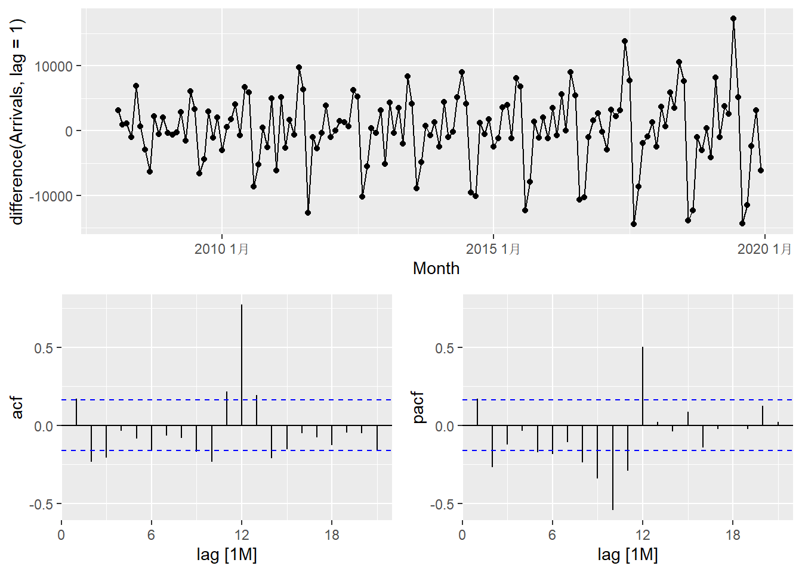
19.8.3.2 Seasonal differencing
tsibble_longer %>%
filter(Country == "Vietnam") %>%
gg_tsdisplay(difference(
Arrivals,
difference = 12),
plot_type='partial')Warning: Removed 12 rows containing missing values or values outside the scale range
(`geom_line()`).Warning: Removed 12 rows containing missing values or values outside the scale range
(`geom_point()`).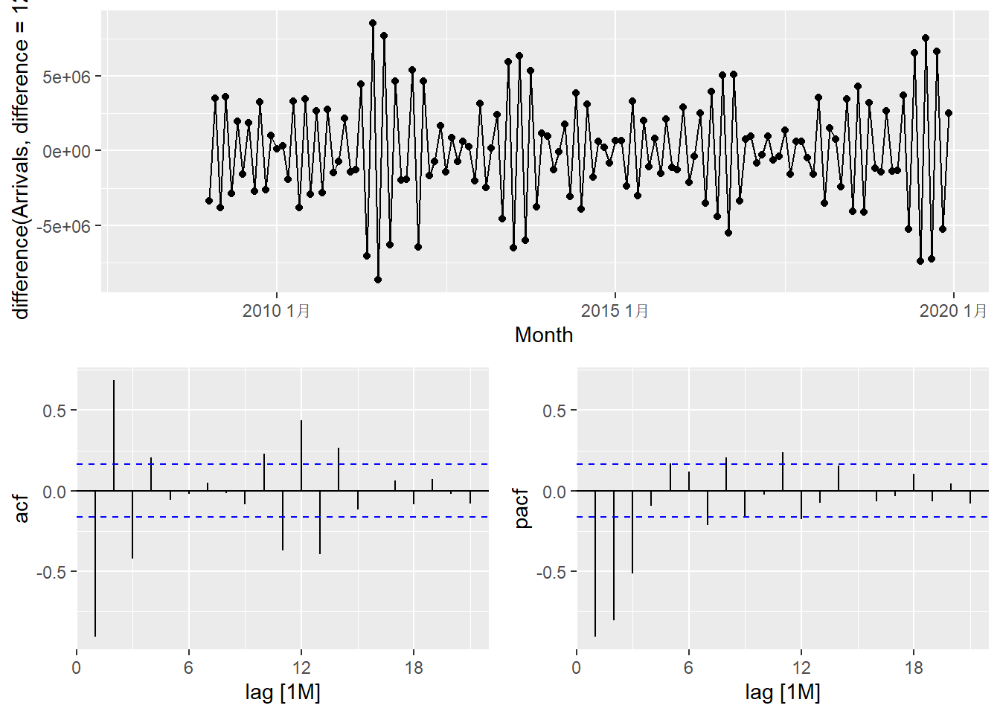
19.8.4 Fitting ARIMA models manually: fable methods
fit_arima <- vietnam_train %>%
model(
arima200 = ARIMA(Arrivals ~ pdq(2,0,0)),
sarima210 = ARIMA(Arrivals ~ pdq(2,0,0) +
PDQ(2,1,0))
)
report(fit_arima)Warning in report.mdl_df(fit_arima): Model reporting is only supported for
individual models, so a glance will be shown. To see the report for a specific
model, use `select()` and `filter()` to identify a single model.# A tibble: 2 × 9
Country .model sigma2 log_lik AIC AICc BIC ar_roots ma_roots
<chr> <chr> <dbl> <dbl> <dbl> <dbl> <dbl> <list> <list>
1 Vietnam arima200 4173906. -1085. 2181. 2182. 2198. <cpl [26]> <cpl [0]>
2 Vietnam sarima210 4173906. -1085. 2181. 2182. 2198. <cpl [26]> <cpl [0]>19.8.5 Fitting ARIMA models automatically: fable methods
fit_autoARIMA <- vietnam_train %>%
model(ARIMA(Arrivals))
report(fit_autoARIMA)Series: Arrivals
Model: ARIMA(2,0,0)(2,1,0)[12] w/ drift
Coefficients:
ar1 ar2 sar1 sar2 constant
0.4748 0.1892 -0.5723 -0.1578 1443.2068
s.e. 0.0924 0.0903 0.0989 0.1032 188.9468
sigma^2 estimated as 4173906: log likelihood=-1084.6
AIC=2181.19 AICc=2181.94 BIC=2197.9219.8.7 Forecast Multiple Time Series
In this section, we will perform time series forecasting on multiple time series at one goal. For the purpose of the hand-on exercise, visitor arrivals from five selected ASEAN countries will be used.
First, filter() is used to extract the selected countries’ data.
ASEAN <- tsibble_longer %>%
filter(Country == "Vietnam" |
Country == "Malaysia" |
Country == "Indonesia" |
Country == "Thailand" |
Country == "Philippines")ASEAN_train <- ASEAN %>%
mutate(Type = if_else(
`Month-Year` >= "2019-01-01",
"Hold-out", "Training")) %>%
filter(Type == "Training")19.8.8 Fitting Mulltiple Time Series
In the code chunk below auto ETS and ARIMA models are fitted by using model().
ASEAN_fit <- ASEAN_train %>%
model(
ets = ETS(Arrivals),
arima = ARIMA(Arrivals)
)19.8.9 Examining Models
The glance() of fabletools provides a one-row summary of each model, and commonly includes descriptions of the model’s fit such as the residual variance and information criteria.
ASEAN_fit %>%
glance()# A tibble: 10 × 12
Country .model sigma2 log_lik AIC AICc BIC MSE AMSE MAE
<chr> <chr> <dbl> <dbl> <dbl> <dbl> <dbl> <dbl> <dbl> <dbl>
1 Indonesia ets 1.02e-2 -1561. 3156. 3161. 3205. 1.74e8 1.80e8 0.0732
2 Indonesia arima 1.48e+8 -1290. 2589. 2590. 2603. NA NA NA
3 Malaysia ets 4.67e-3 -1430. 2894. 2899. 2943. 2.04e7 2.00e7 0.0506
4 Malaysia arima 2.62e+7 -1185. 2378. 2379. 2390. NA NA NA
5 Philippines ets 3.56e-3 -1343. 2722. 2728. 2774. 5.28e6 7.58e6 0.0461
6 Philippines arima 8.04e+6 -1122. 2260. 2262. 2283. NA NA NA
7 Thailand ets 6.63e-3 -1343. 2722. 2728. 2774. 5.40e6 6.33e6 0.0584
8 Thailand arima 8.51e+6 -1127. 2269. 2270. 2288. NA NA NA
9 Vietnam ets 4.55e-3 -1300. 2635. 2640. 2684. 3.05e6 3.42e6 0.0520
10 Vietnam arima 4.17e+6 -1085. 2181. 2182. 2198. NA NA NA
# ℹ 2 more variables: ar_roots <list>, ma_roots <list>19.8.10 Extracintg fitted and residual values
The fitted values and residuals from a model can obtained using fitted() and residuals() respectively. Additionally, the augment() function may be more convenient, which provides the original data along with both fitted values and their residuals.
ASEAN_fit %>%
augment()# A tsibble: 1,320 x 7 [1M]
# Key: Country, .model [10]
Country .model Month Arrivals .fitted .resid .innov
<chr> <chr> <mth> <dbl> <dbl> <dbl> <dbl>
1 Indonesia ets 2008 1月 62683 56534. 6149. 0.109
2 Indonesia ets 2008 2月 47834 46417. 1417. 0.0305
3 Indonesia ets 2008 3月 64688 62660. 2028. 0.0324
4 Indonesia ets 2008 4月 58074 61045. -2971. -0.0487
5 Indonesia ets 2008 5月 57089 62280. -5191. -0.0833
6 Indonesia ets 2008 6月 70118 75791. -5673. -0.0749
7 Indonesia ets 2008 7月 73805 78691. -4886. -0.0621
8 Indonesia ets 2008 8月 58015 61910. -3895. -0.0629
9 Indonesia ets 2008 9月 63730 74518. -10788. -0.145
10 Indonesia ets 2008 10月 71206 67869. 3337. 0.0492
# ℹ 1,310 more rows19.8.11 Comparing Fit Models
In the code chunk below, accuracy() is used to compare the performances of the models.
ASEAN_fit %>%
accuracy() %>%
arrange(Country)# A tibble: 10 × 11
Country .model .type ME RMSE MAE MPE MAPE MASE RMSSE ACF1
<chr> <chr> <chr> <dbl> <dbl> <dbl> <dbl> <dbl> <dbl> <dbl> <dbl>
1 Indonesia ets Trai… -1.81e3 13187. 9665. -1.83 7.57 0.556 0.619 -0.236
2 Indonesia arima Trai… -9.54e1 11351. 8382. -0.136 6.38 0.482 0.533 -0.00802
3 Malaysia ets Trai… -6.78e2 4515. 3538. -1.25 5.15 0.529 0.527 -0.288
4 Malaysia arima Trai… -2.33e1 4801. 3684. -0.109 5.20 0.551 0.561 -0.00933
5 Philippi… ets Trai… -2.35e0 2298. 1897. -0.334 4.64 0.464 0.408 0.0400
6 Philippi… arima Trai… 9.53e0 2624. 1934. -0.269 4.60 0.473 0.466 0.00717
7 Thailand ets Trai… 1.97e1 2323. 1773. -0.511 5.89 0.489 0.485 -0.0812
8 Thailand arima Trai… 5.88e1 2710. 1932. -0.562 6.16 0.532 0.565 -0.0112
9 Vietnam ets Trai… -3.52e1 1745. 1386. -0.728 5.29 0.467 0.473 0.279
10 Vietnam arima Trai… 1.95e0 1907. 1458. -0.671 5.37 0.491 0.517 0.0136 19.8.12 Forecast Future Values
Forecasts from these models can be produced directly as our specified models do not require any additional data.
ASEAN_fc <- ASEAN_fit %>%
forecast(h = "12 months")19.8.13 Visualising the forecasted values
In the code chunk below autoplot() of feasts package is used to plot the raw and fitted values.
ASEAN_fc %>%
autoplot(ASEAN)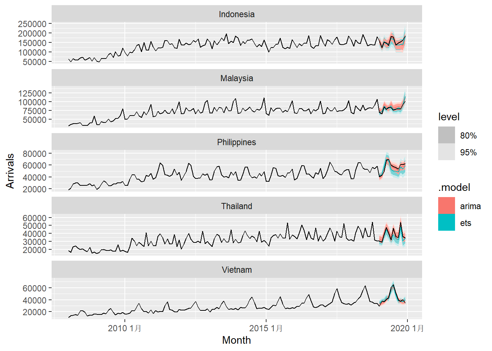